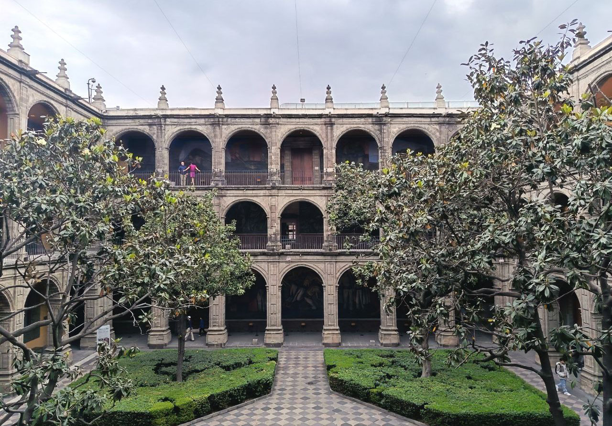
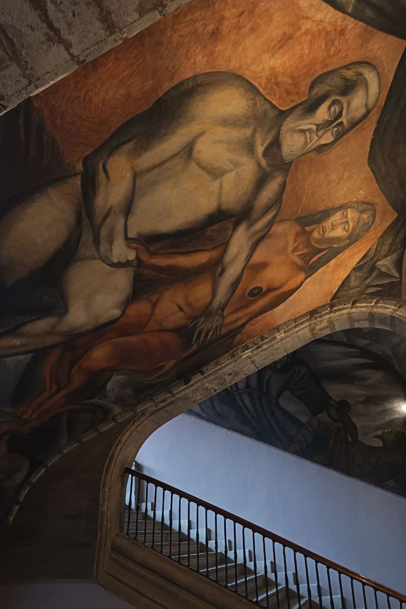
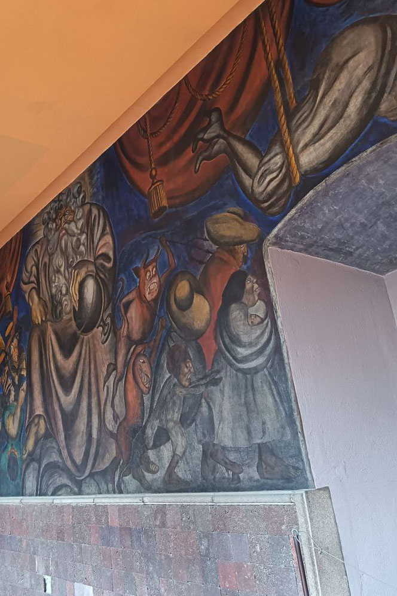
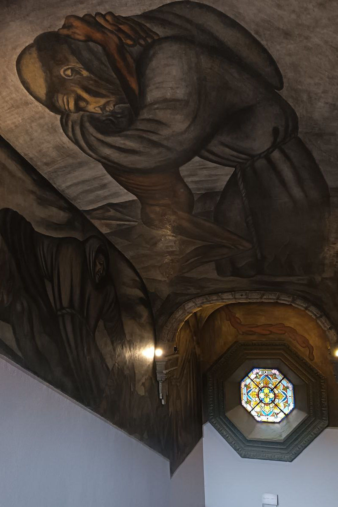

Colegio de San Ildefonso
Dirección: Justo Sierra #16
Horario: Mar a Dom, 10:00 - 18:00 hrs.
Costo: $50.00 MXN.
Recorrido: 1.5 horas aprox.



Nota del Explorador: Considerado la cuna del muralismo mexicano; aquí Rivera pintó su primer mural: "La Creación".